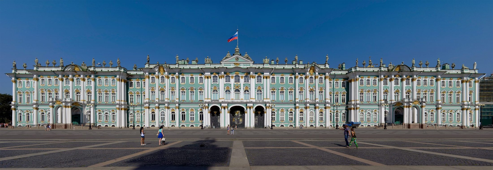
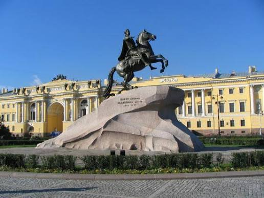
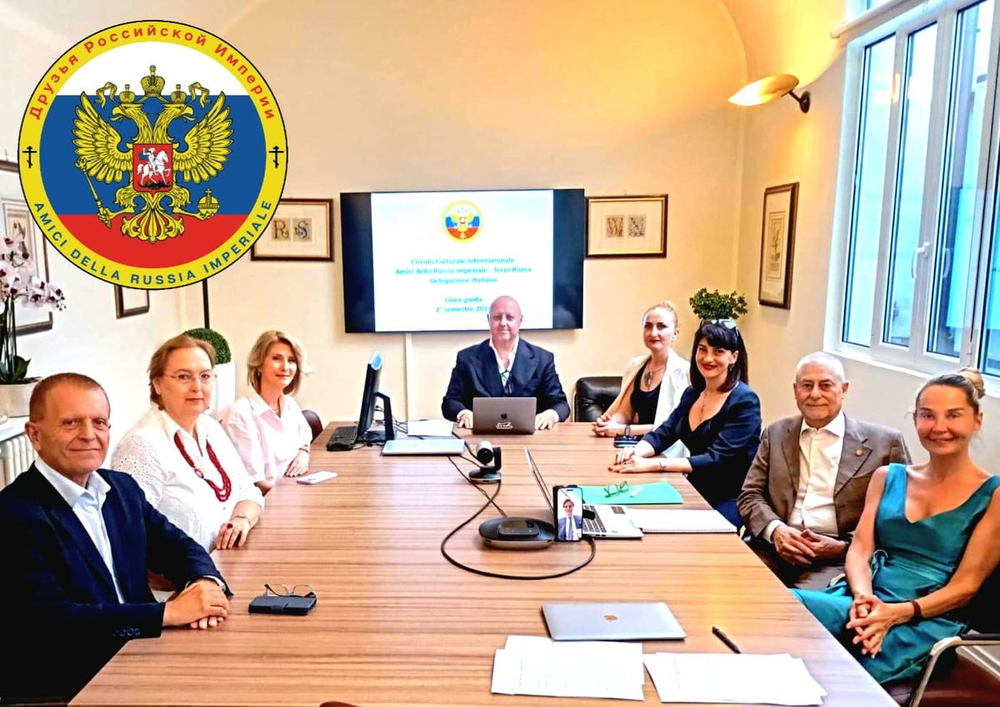
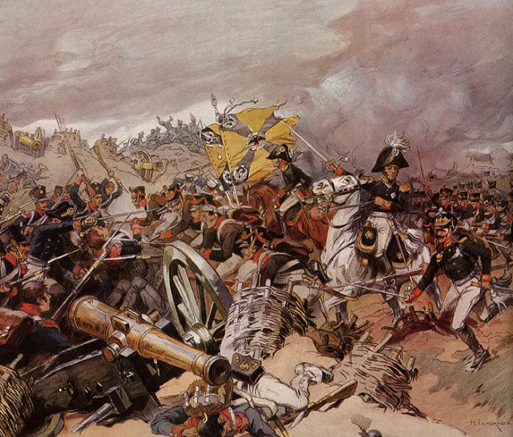
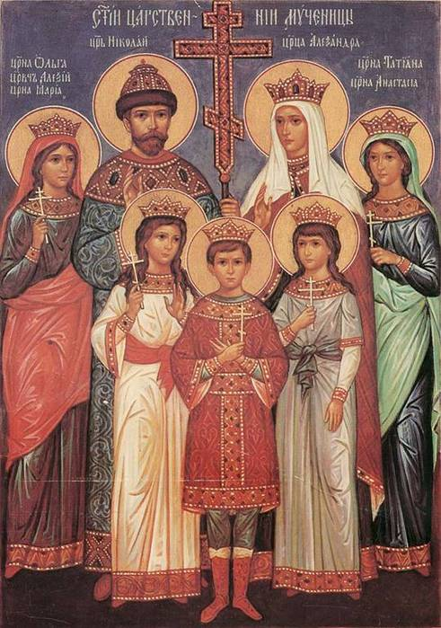
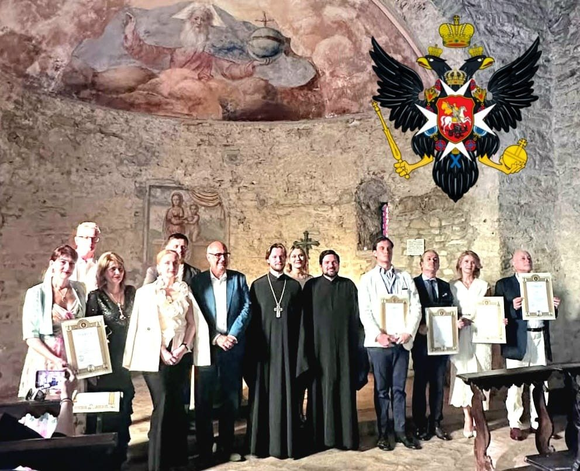
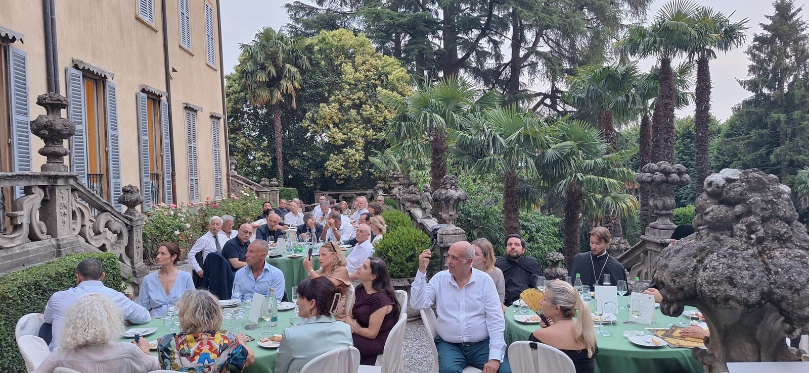
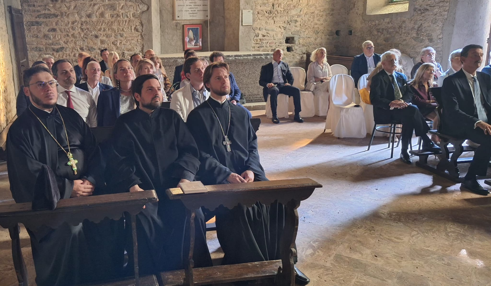

Circolo Internazionale Amici della Russia Imperiale Terza Roma
Custodire la memoria e la bellezza della Russia imperiale.
Chi siamo
Un sodalizio culturale che custodisce la storia, l'arte e la spiritualita della Russia imperiale. Italiani, russi e discendenti di antiche famiglie dell'Impero, uniti da una stessa eredita.

La nostra storia
Il 16 giugno 2026, nel giorno dei Santi della Terra Russa, l'associazione nasce ufficialmente a Milano. Una storia che intreccia fede, memoria e appartenenza.


Feste e ricorrenze
Il calendario delle memorie che scandiscono l'anno ortodosso e imperiale.

Eventi e attivita
Incontri, cerimonie e visite dedicati alla cultura russa in Italia.


